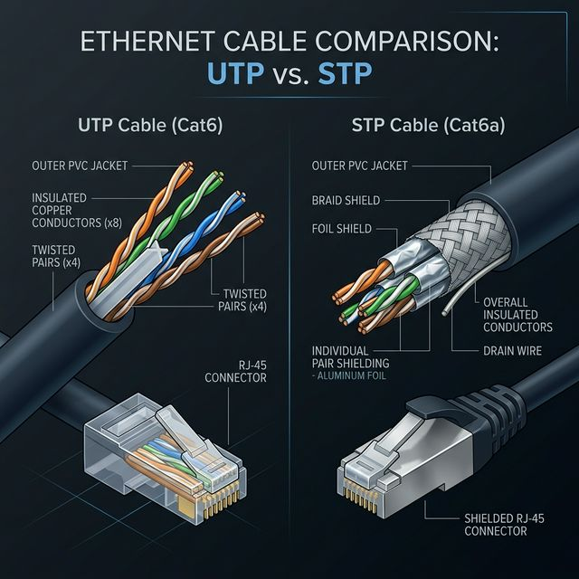
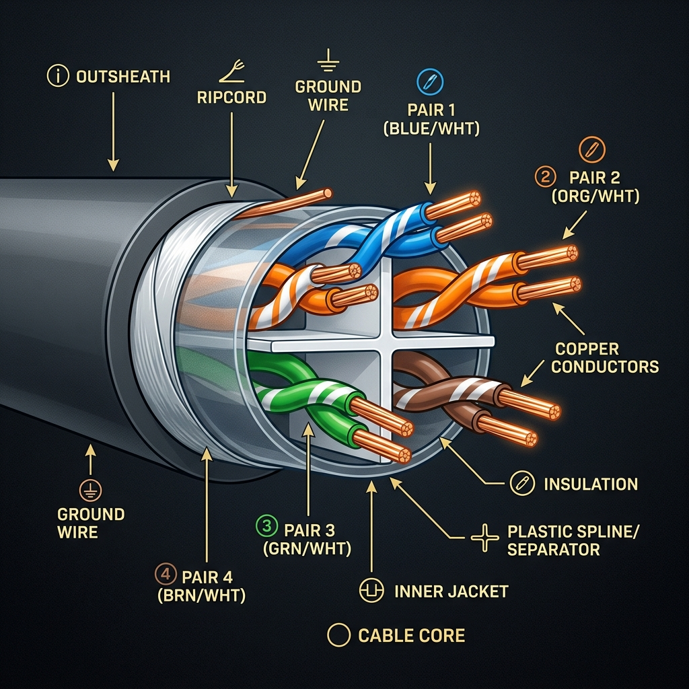
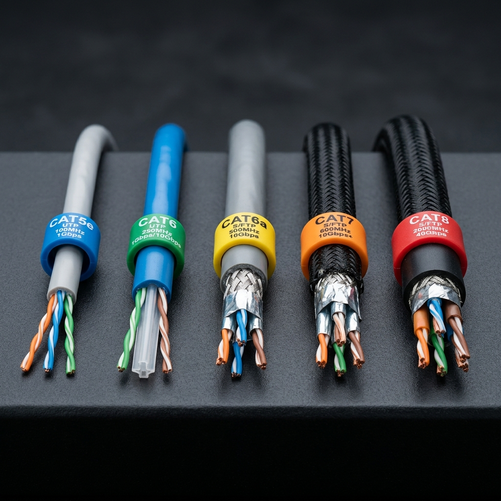
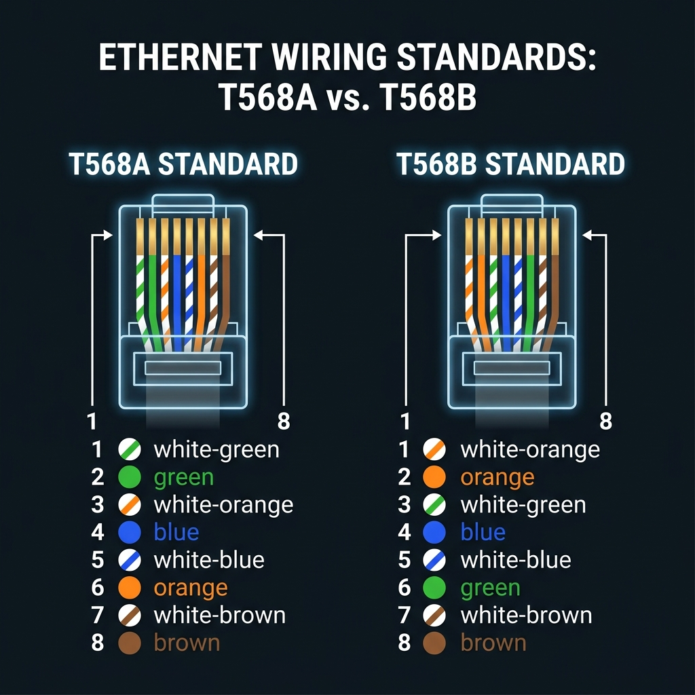
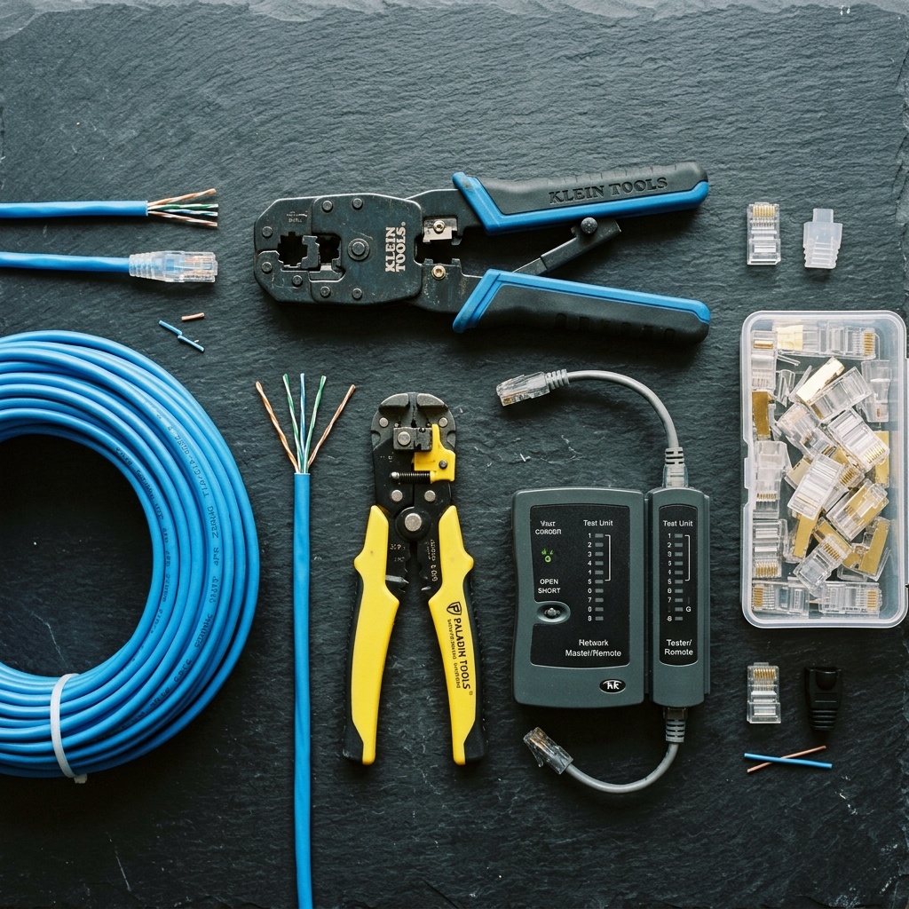
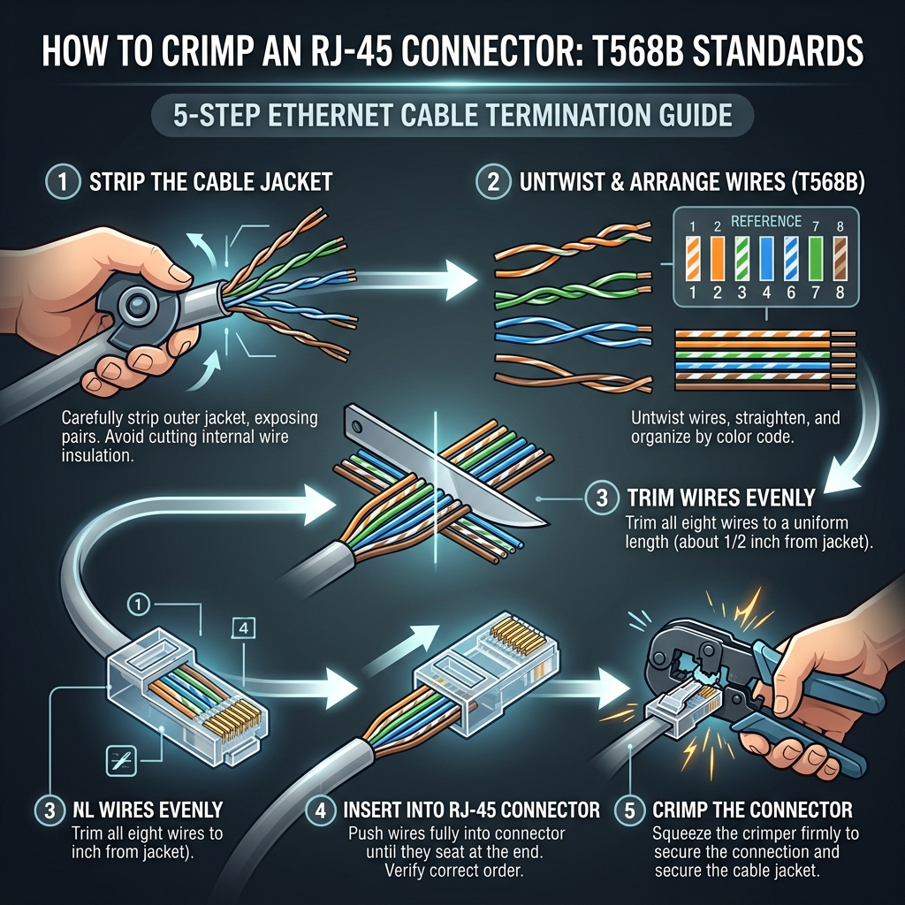

Cable de Par Trenzado
El cable más usado del mundo
Ethernet · RJ-45 · UTP/STP · Cobre trenzado
El cable de par trenzado es el medio de transmisión guiado más utilizado en redes de área local (LAN) en todo el planeta. Está compuesto por pares de hilos de cobre aislados individualmente y entrelazados en espiral entre sí para reducir la interferencia electromagnética y la diafonía (crosstalk).

¿Cómo se le conoce?
El cable de par trenzado recibe múltiples nombres según el contexto, la región o el ámbito técnico:
Especificaciones Técnicas
Estructura Interna del Cable


Cada cable de par trenzado contiene 4 pares de hilos de cobre (8 hilos en total), cada par trenzado entre sí con un paso de torsión diferente para minimizar la interferencia mutua. Los colores estándar son:
- Par 1: Azul y blanco-azul
- Par 2: Naranja y blanco-naranja
- Par 3: Verde y blanco-verde
- Par 4: Marrón y blanco-marrón
¿Por qué se trenzan? El trenzado crea un efecto de cancelación de ruido: cuando una interferencia electromagnética externa afecta a un hilo, afecta al hilo adyacente en dirección opuesta, cancelándose mutuamente. A mayor cantidad de trenzas por metro, mayor protección contra interferencias.
UTP vs STP — Variantes principales
UTP — Sin blindaje
Unshielded Twisted Pair. Los pares trenzados están envueltos solo en su cubierta plástica externa, sin capas metálicas adicionales de protección.
- Costo: Más económico ($2–$5 MXN/m)
- Flexibilidad: Más ligero y fácil de instalar
- Uso: Oficinas, hogares, escuelas
- Limitación: Susceptible en entornos con alta EMI
STP — Con blindaje
Shielded Twisted Pair. Cada par (o el conjunto completo) está envuelto en una lámina metálica o malla que actúa como barrera contra interferencias externas.
- Costo: Más caro ($8–$15 MXN/m)
- Protección: Excelente contra EMI y RFI
- Uso: Fábricas, hospitales, data centers
- Limitación: Más rígido y difícil de manejar
Categorías del Cable de Par Trenzado

| Categoría | Velocidad Máx. | Frecuencia | Alcance | Uso Típico |
|---|---|---|---|---|
| Cat 3 | 10 Mbps | 16 MHz | 100 m | Telefonía (obsoleto en datos) |
| Cat 5 | 100 Mbps | 100 MHz | 100 m | Fast Ethernet (obsoleto) |
| Cat 5e | 1 Gbps | 100 MHz | 100 m | Hogares y oficinas — el más común |
| Cat 6 | 10 Gbps | 250 MHz | 55 m (10G) / 100 m (1G) | Oficinas y redes empresariales |
| Cat 6A | 10 Gbps | 500 MHz | 100 m | Empresas y data centers |
| Cat 7 | 10 Gbps | 600 MHz | 100 m | Centros de datos (STP) |
| Cat 7A | 10 Gbps | 1000 MHz | 100 m | Instalaciones de alto rendimiento |
| Cat 8 | 25–40 Gbps | 2000 MHz | 30 m | Data centers — conexiones entre switches |
¿Para qué se utiliza?
Redes domésticas
Conectar computadoras, consolas de videojuegos, Smart TVs y otros dispositivos al router de Internet del hogar.
Redes empresariales
Interconectar PCs, impresoras, servidores y switches en oficinas, escuelas y universidades.
Telefonía VoIP
Transmitir llamadas de voz sobre IP usando la misma infraestructura de red Ethernet existente.
Cámaras de seguridad (PoE)
Alimentar y transmitir video desde cámaras IP mediante un solo cable usando Power over Ethernet.
Centros de datos
Interconectar racks de servidores, switches y sistemas de almacenamiento con cables Cat6A/Cat8.
Gaming competitivo
Conexión directa por cable para minimizar la latencia en partidas online competitivas.
Normas de Cableado — T568A y T568B
Existen dos estándares internacionales para ordenar los hilos dentro del conector RJ-45. Ambos son válidos, pero es fundamental mantener consistencia en toda la instalación:

Cable Directo (Straight-Through)
Ambos extremos con la misma norma (T568B–T568B). Se usa para conectar dispositivos diferentes: PC → Switch, Switch → Router.
Cable Cruzado (Crossover)
Un extremo T568A y el otro T568B. Se usaba para conectar dispositivos iguales: PC → PC, Switch → Switch. Hoy los switches modernos auto-detectan (Auto-MDI/X).
T568B es el estándar más utilizado en América y en la mayoría de instalaciones comerciales. T568A es más común en instalaciones gubernamentales y en Europa. Ambos funcionan igual de bien; lo importante es no mezclarlos en el mismo extremo.
🎬 Video Tutorial: Cómo Ponchar un Cable de Red
Aprende paso a paso cómo armar tu propio cable de par trenzado con conector RJ-45.
Cómo Hacer un Cable de Par Trenzado
Herramientas necesarias

- Ponchadora (Crimping tool): Herramienta principal para presionar los pines del conector RJ-45 contra los hilos de cobre.
- Pelacables: Para retirar la cubierta exterior sin dañar los hilos internos.
- Conectores RJ-45: Se necesitan 2 por cable (uno en cada extremo).
- Tester de cables: Para verificar que todos los hilos hacen contacto correctamente.
- Cable UTP Cat5e o Cat6: La longitud deseada más un margen extra.
Pasos para ponchar el cable

Cortar y pelar la cubierta
Con el pelacables, retira aproximadamente 2–3 cm de la cubierta plástica exterior del cable. Ten cuidado de no cortar los hilos internos; solo la cubierta externa debe removerse.
Destrenzar y separar los hilos
Desenrolla los 4 pares trenzados y separa los 8 hilos individualmente. Estíralos lo más recto posible para facilitar su alineación.
Ordenar según la norma T568B
Organiza los 8 hilos de izquierda a derecha: blanco-naranja, naranja, blanco-verde, azul, blanco-azul, verde, blanco-marrón, marrón. Verifica el orden dos veces antes de continuar.
Cortar parejo e insertar en el conector
Corta los hilos a una longitud uniforme (~1.2 cm) e insértalos firmemente en el conector RJ-45 con la pestaña hacia abajo. Los hilos deben llegar hasta el fondo del conector y la cubierta del cable debe entrar al menos 5 mm dentro del conector.
Ponchar con la crimping tool
Inserta el conector en la ranura RJ-45 de la ponchadora y presiona con fuerza hasta escuchar un "click". Repite el proceso en el otro extremo del cable. Finalmente, prueba el cable con el tester para asegurar que los 8 hilos tienen continuidad.
Consejo profesional: Si el tester muestra que algún par no tiene continuidad o está cruzado, corta el conector y repite el proceso. Un mal ponchado puede causar pérdida de paquetes, velocidades reducidas o desconexiones intermitentes.
Ventajas y Desventajas
✅ Ventajas
- Económico y fácil de conseguir en todo el mundo.
- Instalación simple sin equipos especializados costosos.
- Compatible con miles de dispositivos (Ethernet universal).
- Soporta Power over Ethernet (PoE) para alimentar dispositivos.
- Velocidades de hasta 40 Gbps en categorías altas.
⚠️ Desventajas
- Distancia limitada a 100 metros por segmento.
- Susceptible a interferencias EMI (especialmente UTP).
- Velocidad inferior a la fibra óptica.
- Degradación de señal en distancias largas.
- Necesita protección física en exteriores.
Dato interesante: Alexander Graham Bell patentó el concepto de trenzar cables en 1881 para reducir la interferencia en líneas telefónicas. Más de 140 años después, el mismo principio sigue siendo la base de las redes Ethernet que conectan al mundo.